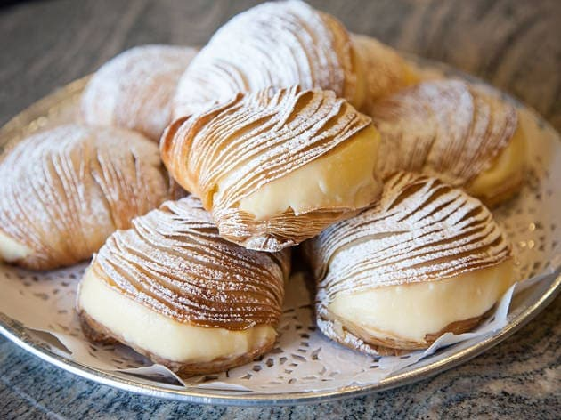

Brisas do Mar de Vila do Conde
Ingredients
- 1 package puff pastry sheets (thawed if frozen)
- 1 cup whole milk
- 1/2 cup granulated sugar
- 3 tablespoons cornstarch
- 4 large egg yolks
- 1 teaspoon vanilla extract
- 1/2 cup unsalted butter, softened
- Confectioners' sugar for dusting

Preparation
-
Preheat the Oven:
Preheat your oven to the temperature recommended on the puff pastry package.
-
Prepare the Puff Pastry:
Roll out the puff pastry sheets and cut them into desired shapes. Place them on a baking sheet lined with parchment paper.
-
Bake:
Bake the puff pastry according to the package instructions or until golden brown and puffed up. Allow them to cool completely.
-
Prepare the Cream Filling:
In a saucepan, whisk together the whole milk, granulated sugar, cornstarch, and egg yolks. Cook over medium heat, stirring constantly until the mixture thickens.
-
Add Vanilla and Butter:
Remove the saucepan from heat and stir in the vanilla extract and softened butter. Mix until well combined and smooth.
-
Fill the Pastries:
Once the puff pastry shapes are cooled, cut them in half horizontally. Spoon or pipe the cream filling onto the bottom halves and sandwich them with the top halves.
-
Dust with Confectioners' Sugar:
Dust the Brisas do Mar with confectioners' sugar before serving.
-
Serve:
Serve these sea-inspired pastries, capturing the essence of Vila do Conde's coastal charm.